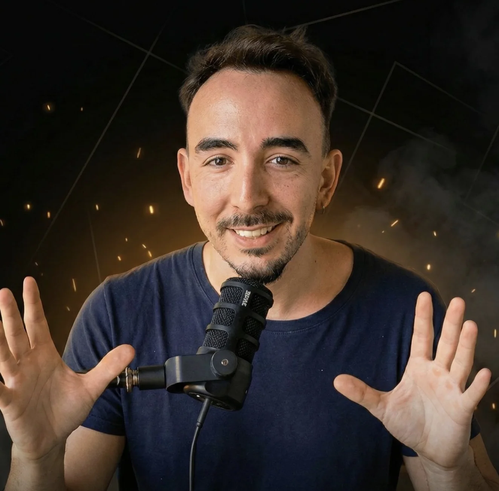

Bono 1
40% off en Sesiones 1-1
Agendá tu sesión con Agus con un 40% de descuento durante toda la cursada del programa.
Entrenamiento online guiado
"Como ir a un gimnasio pero a entrenar el vínculo entre mente y emociones, y aquí las mancuernas son cada oportunidad de tu día a día: Vínculos, Trabajo, Proyectos, Actividades, Estudio. Todo se vuelve entrenable."
Quiero inscribirme3 meses de entrenamiento aplicado directamente a todas las áreas de tu vida, usando tus situaciones cotidianas para ordenar tu mente, liberar tus emociones y desbloquear tu abundancia.
Volvé a la abundancia de crear tu vida desde la autenticidad y la determinación de tu pensamiento intuitivo. Liberate de una vez de todos los condicionamientos espirituales de turno (técnicas, pasos, hábitos, prácticas).
Un proceso diseñado para que detectes tus reacciones automáticas y las reemplaces por acciones intuitivas. Es un proceso sencillo, práctico y profundo de despertar de consciencia.
Lo vas a conseguir desarrollando habilidades creativas y resolutivas con prácticas fundamentadas en neurociencia, psicología, fisiologia, fisica cuantica y espiritualidad que te guiaré a aplicar en cada área de tu vida en el día a día.
Me gusta decir que este programa tiene el propósito de pasar de los problemas que te cansaste de tener a los problemas que siempre quisiste tener.

Creador del Método Contra-Intuitivo, fundador de la Escuela del Pensamiento Intuitivo y con-fundador de la escuela de movimiento Move Mentoring. Profesor en las formaciones de la escuela SomaYoga.
A mis 22 años mi realidad colapsó entre ataques de pánico, la quiebra del negocio familiar, deudas, y ningun patrimonio a favor en la familia. En ese caos fue que experimenté de forma espontánea un estado expandido de conciencia que se sostuvo casi un año. No fue un bienestar pasajero, sino una vivencia trascendental de unidad absoluta que disolvió toda separación a la que describí como “extasis”. Me sentia realizado, completo y enamorado de absolutamente todo. Sentir esa plenitud en pleno caos me dejó nuevas preguntas: ¿Esto significa que siempre tuve la posibilidad de sentirme asi y no la veia? ¿Qué cambia internamente para que el afuera deje de condicionarnos?
Pasé los siguientes cinco años obsesionado con hallar una respuesta científica. Me sumergí en la neurociencia y la fisiologia de la salud, pero caí en la neurosis de acumular comportamientos, hábitos, dietas y terapias logrando unicamente aumentar la obsesión, la frustración y la ansiedad. ¿Como salí del este loop? Comenzando por el final. Un ejemplo fue el día en que decidí renunciar a mi creencia de que estaba enfermo. Ese día me libere del peso de cientos de hábitos, condiciones especiales y miedos que me tenían atado. Paradójicamente me entere que nunca estuve enfermo y entonces los síntomas desaparecieron. Las ilusiones del ego pueden ser muy convincentes, Es contra-intuitivo. Otro ejemplo es cuando decidí resolver mi situación económica. Fue una odisea emocional el admitir que esto era importante para mi y que no necesitaba justificarlo. Llegue a tener ataques de pánico cuando por fin empezaron a ingresarme grandes cantidades de dinero y entonces pude ver con claridad todos los programas inconscientes a los que ni siquiera sabia que me enfrentaba. En ambos casos la transformación fue muy rapida y no tuve que hacer nada mas que dejar morir al personaje. Estar dispuesto a perder aquello que mas creia que anhelaba. Entonces por pirmera vez entendi lo que significa el amor incondicional y el inmenso poder de conlleva.
De pronto todo comenzó a llegar a mi a una velocidad inimaginada, dinero, viajes, vínculos, mi cuerpo mejoro, la piel de mi cara cambió, mi autoestima aumento, mi reconocimiento y mis proyectos crecieron a medida que se volvían mas auténticos. Y entonces me encontre con dinero, tiempo y energia para empezar a ayudar a otras personas.
Para dar rigor a este proceso, estudié Neurociencias con Nazareth Castellanos, Bioneuroemoción con Enric Corbera, y entonces nacio el programa InspirAcción. Tambien trabaje bajo la guia de mentores de negocios con visión espiritual como Lain Garcia Calvo, Sofia Contreras y Mariano Rodriguez, quienes me inspiraron a crear Proyección, una mentoria donde guio a las personas que aprendan a usar sus proyectos personales como un mapa para la evolución interna y la abundancia.
Mi propósito es guiar a las personas a desprogramar sus mecanismos limitantes para expresar su autenticidad y crear su vida sin miedos, culpas ni juicios. El camino es contra-intuitivo: cuando liberás la presión sobre tus metas, ellas solas te vienen a buscar.
Se otorga al completar el proceso. Es requisito para realizar el Nivel 2 y/o la Formación.
Del tema actual aportando más detalles y ejemplos. De los entrenamientos: explicando cómo funcionan, por qué y para qué, y guías prácticas para realizarlos.
Organiza los conceptos de forma práctica, sencilla y aplicable en la vida cotidiana.
Abordamos consultas de casos reales de quienes quieran participar. Revidamos procesos y resolvemos dudas del programa y de los entrenamientos. Se entrega la grabacion dentro de las 48hs para ver en diferido.
Es nuestro punto de encuentro diario. Aqui trancurren los desafios semanales. Exposicion de ejemplos. Envio audios respondiendo dudas y profunizando con explicaciones. No es condicion usarlo, pero es recomendable por el valor que aporta.
Por inscribirte a la 4ª generación del Nivel 1 de InspirAcción.
Agendá tu sesión con Agus con un 40% de descuento durante toda la cursada del programa.

Regulación fisiológica del estrés mediante técnicas de respiración y las prácticas regenerativas.

Prácticas de meta-cognición y regulación de la coherencia cardíaca desde el Yoga.

Se entregan las métricas del progreso grupal realizadas en las 3 instancias claves de la cursada.

Sesiones extras con guías que realizaron el Nivel 1 y 2 de InspirAcción y luego se certificaron como guías en la formación presencial de la escuela.
En InspirAcción trabajamos con el Método Contra-Intuitivo. Uno de sus principios básicos es: "Transformar todo problema en un proyecto de crecimiento personal".
"Un rito cotidiano para liberar la expresión auténtica"
Con el tiempo acumulamos ideas, deseos y emociones sostenidos por el apego, el miedo y la culpa. Muchos pensamientos entran pero pocos se digieren; a menudo actuamos sin que exista un deseo auténtico ni plenitud.
Convertir esa tormenta de pensamientos y memorias caóticas en materia prima para tu intuición. Mediante una práctica de escritura matutina de 5 niveles, depurás la mente a la deriva para ordenar tus ideas.
El proceso calma las aguas y permite que salgan a la luz tus deseos, emociones y sueños auténticos que estaban abandonados.
"Un service a la antena de la intuición"
La ciencia explica cómo mejorar la salud y el bienestar, pero no suele explicar para qué necesitamos esa salud. Sin un propósito claro, incluso los practicantes más constantes se desmotivan.
Técnicas de respiración y meditación para regular tu coherencia cardíaca (comunicación armoniosa entre corazón, cerebro y sistema nervioso). Aprenderás a medir y comprobar por tu cuenta cuándo entrás en coherencia.
No buscamos solo relajación sino sintonizar con tu creatividad y originalidad. La paz y la salud son consecuencias de esta sintonía. La verdadera meditación comienza al abrir los ojos.
"Actualizando el sistema de creencias"
Saber no es sinónimo de ser consciente. Solemos usar frases como "ya sé lo que me pasa" para postergar decisiones difíciles. Este "darse cuenta" constante, pero vacío de acción, es un recurso del ego.
Responderás preguntas estructuradas para desafiar tus creencias base. Detectarás incoherencias y limitaciones que creías verdades. Es una lucha de igual a igual contra uno mismo para dejar caer viejas identidades.
Una actualización del sistema. Liberarás creencias que ya no cuadran con tu nueva versión y detectarás las historias que te contabas para evitar avanzar. Los nuevos pensamientos se "descargan" solos al liberar espacio.
"La psicología del futuro tiene que ser más cercana, humana y expansiva"
La psicología no debería ser tan solemne y distante. El problema común es la idea de que estamos separados en un mundo escaso, donde solo podemos ser víctimas o victimarios para validar nuestro sufrimiento.
Este espacio es comunidad y unión. En las sesiones grupales todos somos un espejo. Al compartir casos personales, las creencias limitantes se disuelven para todos por igual en un entorno libre de juicios.
Una desprogramación grupal que aporta inspiración y renovación emocional. Vas a ver cómo la evolución de otros te cambia en tiempo real y tendrás la oportunidad de ser el ejemplo e inspirar a otros.
Cada uno de los siguientes temas establece las bases sobre las que fueron creados los entrenamientos: Neurociencia, Psicología, Fisiología, Metafísica, Filosofía y Espiritualidad.
No es un requisito pero por la experiencia es recomendable, ya que abordamos cuestiones prácticas de la vida cotidiana y se mantiene un nivel profesional y cálido a la vez.
Las sesiones en vivo quedan grabadas y se entregan dentro de las 48hs posteriores. Cualquier consulta o intervención la podés dejar en el grupo de WhatsApp, que funciona como extensión de las sesiones en vivo.
El programa viene demostrando una igualdad de efectividad en todos los casos. Al trabajar con casos de la vida cotidiana es difícil determinar cuánto tiempo lleva el programa, ya que vas a aprender a usar todas las áreas de tu vida como entrenamiento.
Si hablamos en términos de lectura, escritura, prácticas complementarias y sesiones, calculamos un mínimo de entre 2 y 6 horas semanales. (Pensalo como un gimnasio, porque funciona exactamente igual.)
Para obtener la certificación deberás completar el programa y dos formularios de evaluación que van a medir tus niveles de evolución en áreas de tu vida, dejando evidencia de los cambios relativos (emocional y mental) y objetivos (sucesos, salud, finanzas, acciones, hábitos, vínculos, etc.).
Al ser un programa de entrenamiento el único requisito es entrenar y ver los resultados suceder. La evidencia definitiva es tu vida.
Por resonancia. Por lo general la mayoría de las personas que ingresan al programa ya escucharon todos los podcast o vieron las clases de YouTube, por lo tanto ingresan por intuición. Si estás buscando un curso más, no es este tu lugar. Esto no es para saber más de un tema, es para ser el cambio.
Pensalo como una combinación entre un programa de educación en libertad emocional (el que no tuvimos en la escuela) y una sesión de 3 meses de entrenamiento en neuro-psico-espiritualidad grupal guiada por un entrenador. El nivel de impacto es total.
Para responder esto prefiero dejarlos con los testimonios de las personas que ya pasaron por el programa.
De la última generación
Les preguntamos:"Para realizar este entrenamiento muchos de ustedes invirtieron la energía que apenas tenían, el tiempo que les faltaba y el dinero de sus ahorros o que pidieron prestado. Si es tu caso, siendo completamente honesto/a con vos: ¿considerás que lo valió? ¿Qué le dirías a alguien que está en la misma situación en la que estabas antes de tomar la decisión?"
Y también: "Si tuvieras que explicar qué hace a InspirAcción diferente a otras propuestas, ¿Qué dirías?"
Siento que lo valió completamente, todavía en el proceso del modulo 6 jejej. pero lo vale y lo valió y continua, porque es algo de toda la vida, y no de unos meses nada más. Es un aprendizaje, para volver a revisarlo y practicarlo, y entrenarlo y volverlo a ver y volver a entrenar. Le diría a esa persona que vaya para adelante, que confié en su fuego interno y que si la intuición lo pide, que la escuche y vaya. (Lo escribo y me río porque lo que le digo a esa persona me lo estoy diciendo a mi, muchas veces no lo aplico, pero cuando lo aplico, es por ahí)
Si lo super valió, lo dudé, pero en cuanto comenzo supe que estaba en el camino correcto y estoy muy feliz con todo el conocimiento aprendido y sobre todo la energia del grupo y todo lo leido! Sobre todo lo valió por que fue muy desafiante y siento que lo pasé por el cuerpo y ahora tengo otra creencia sobre quien soy y lo que puedo hacer y como ver situaciones y conflictos.
Sí, lo valió. Y creo recién comienza...
Le diría que hay decisiones en la vida que dependen de esa voluntad y de esa escucha interna que no vale a quedarnos en cada apoyo en la almohada, en cada momento en el indoloro, en cada minuto al azar.
Y que si esa voluntad y escucha están en duda o sufrimiento, necesitan sólo una decisión, sólo una, sólo un momento de inconsciencia para entrenar y transformar este Ser que nos acompaña con quien tenemos la inevitable conveniencia de cerrar la relación más honesta del mundo: experimentá InspirAcción.
Lo valió muchisimo. Le diría que no tenga miedo, que no se va a arrepentir, que lo vea como una inversión en sí mismo, que no hay forma que nada cambie luego de esto. Y que confíe en que se dieron las condiciones perfectas para que llegue a este contenido, que se entregue al juego de lo que es, y se prepare para despertar porque esto es picantiiiisimooo
El contenido es el diferencial y la forma en la que Agus lo explica.
El temario y los conceptos están muy por fuera de lo común, la propuesta te sumerge en un hábitar distinto con uno mismo
La coherencia de todo el proceso. El contenido teórico es excelente, los ejercicios con propósitos definidos, las clases presenciales donde abordamos ejemplos prácticos, y aplicables en las vidas de cada uno. Como todo se va intentando y va contando de mucho sentido.
Que es un entrenamiento de la mente - parece terapia (y en cierto punto lo es!) pero es una práctica para re programar , re conocer, re aprender, consciente mente Se aprende de cómo funciona el cerebro, la mente , el SNC, etc para luego desarticular o re articularlo para nuestro beneficio. No es fácil, y por momentos incómodo pero por ahí es.
Hacerse responsable de uno mismo tambien tiene que ver con explorar los lugares mas ocultos que a veces ni sabemos que los tenemos pero el grupo y la comunidad acompaña de forma amorosa y que cada uno va a su tiempo, no hay prisa.
Depende desde donde nace esta decisión y tu capacidad de inpirarte, poner foco, voluntad, hacer el trabajo y porque no abandonarlo para sentir. Creo que el único requisito es saber que algo más grande que una situación te motiva, que tienes curiosidad, algo te impulsa y deseas saber lo que está dentro de ti.
Primero y más importante que es una inversión para tu salud mental , partiendo de esa base , invertir en uno mismo es lo más auténtico y placentero que harás. Le diría que se anime a preguntarse cosas, le diría que se atreva a un despertar diferente, a entrenar la cabeza para que pueda mejorar día a día y no preocuparse porque cosas que solo ocupan lugar con el ego de amigo y no resuelven nada de tu aquí y ahora.
Considero que lo valió y más. Me agradezco por haber dicho sí en ese momento en el que mi cuenta bancaria no daba fé de que podamos pagarlo! Me agradezco haber saltado porque lo que siento que me llevo es realmente invaluable. Le diría que en este mundo, dónde casi todo invita a mirar afuera, este programa donde encontras herramientas súper amorosas y prácticas para conocerte más, mejor, hacerte cargo de tu vida y sobre todo sufrir menos es para todo aquel que quiera cambios reales en su existencia! Que no hay forma de arrepentirse.
En cuanto al material y la propuesta en si, lo veo diferente en la variedad de info y material teórico, incluyendo los materiales complementarios y citas. Es bastante enriquecedor, poder tener otras referencias para continuar buceando en este mar de info hermoso. También lo veo diferente a otras propuestas, desde ya por la visión de Agus y la guía de él. Creo que, el no estar como un referente onda "Maestro o Gurú", o por lo menos percibiéndolo así, hace que sea más genuina la propuesta.
Cambio mi forma de ver la realidad, por ende de accionar y de vivir.
Inspiracción a diferencia de otros programas, te da herramientas REALES Y PRÁCTICAS para aplicar HOY en tu vida. No te pide nada que no tengas, no subestima, al contrario, te obliga amorosamente a ponerte en el lugar de creador que te corresponde como ser humano.
Como dijo Agus , te entrena , esto fue un entrenamiento intensivo de cómo entender cómo funciona la cabeza , la mente , las máscaras del ego. El formato que tiene este programa lo hace diferente a otras propuestas. Depende mucho del enfoque del orador y la consecuencia que le busque el receptor
Que no lo piense, es un antes y después la manera de ver y sentir la vida
Vengo gastando mucha plata en formaciones pero esta es la más significativa. La que me dio las herramientas y me ayudo a ver que no soy el único loco que cree en todo esto. Ya que desde chico vengo pasando por varias filosofías a través del entrenamiento y los deportes de combate. Ahora todo se simplifica y me da poder de crado. En si entendi todo. Ahora es cuestión de seguir aplicando y disfrutando que era la parte que no estaba haciendo. Graciass!!!
Siii valió 100% la pena aunque aún no termino pero sé que eso tiene que ver conmigo pero ah valido la pena cada peso y segundo. Le diría que vale mucho la pena es una experiencia que LITERALMENTE te cambia la vida. De hoy para siempre
Si. Para mi fue un entrenamiento 100% recomendable. Me quedo con un montón de herramientas que incluso hoy llevo a mis prácticas, a mis alumn@s. Feliz de haber llegado a vos Agus y feliz de poder estar en Pipa en dos semanas. Solo agradecimiento por todo lo que enseñas, por tu forma de transmitir, por tu mirada.
Estructura los diversos y múltiples accesos de información (filosofías, prácticas, estudios, etc) de una manera inteligente, ordenada y eficiente para aplicarlos en conjunto, tanto en el estudio y práctica mental/cognitiva/ inteligible como en la práctica somática y cuántica.
Que te permite observar y aprender a gestionar la mente el cuerpo la percepción y la modulación del tiempo, una herramienta de conocimiento muy profundo, desafiante y posible
Combina todo lo que en otros lugares solo es info aislada y eso genera confusión y más ruido mental, el tener todo en un solo lugar ayuda darle mucho más sentido a todo y darnos cuenta que eso que pareciera ser “diferente” no es nada más que lo mismo dicho de otra forma
Última generación certificada del Nivel 1
-
-
-
-
28 respuestas · Escala 1 al 5
28 respuestas
Plazas limitadas. Próxima edición: Julio 2026.
Quiero hablar con Agustín